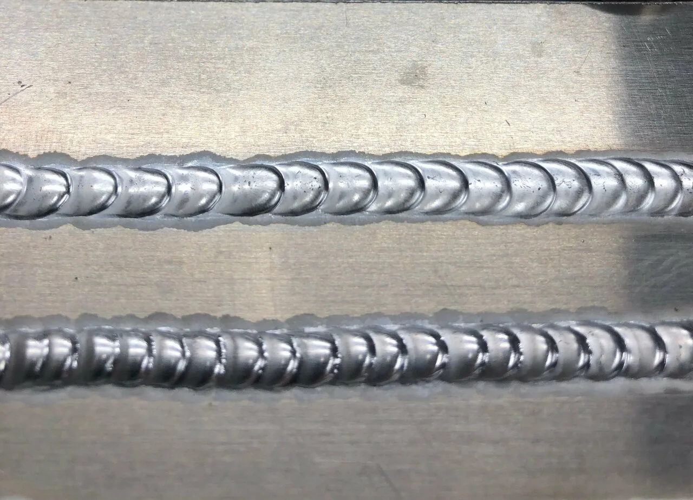
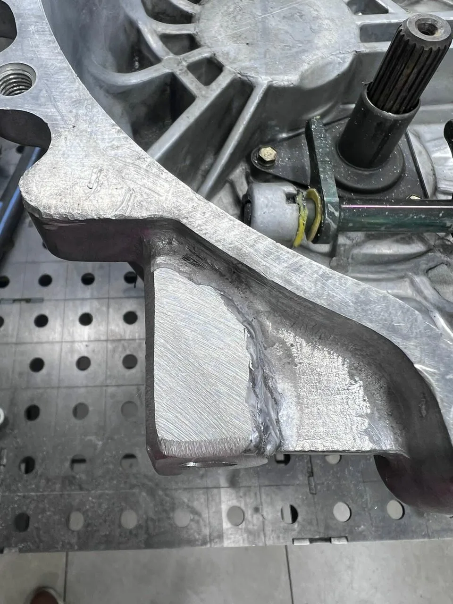
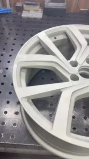
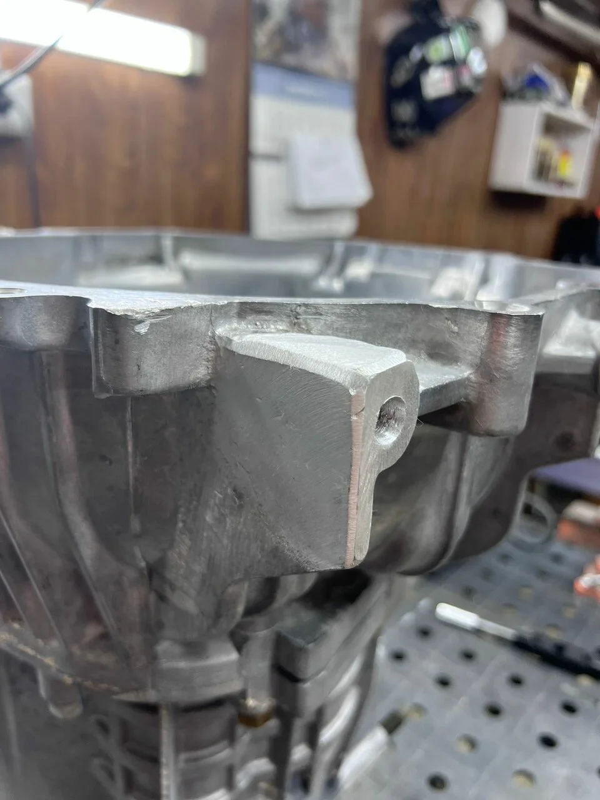

Диски
Сварка и реставрация автомобильных дисков.
Сварка аргоном и восстановление деталей.
От автомобильного диска до деталей мотоцикла — обсудите вашу задачу с мастером.

TIG / ДЕТАЛИ РЕШАЮТВозможность восстановления, стоимость и сроки определяются по состоянию детали. Начните с фотографии.
Сварка и реставрация автомобильных дисков.
Восстановление деталей мотоциклов, работы с выхлопной системой.
Сварочные работы с алюминием, нержавейкой и другими металлами.



Реальные фотографии из карточки мастерской
и публичного канала Tig_AWM.
Отправьте Антону фото повреждения и короткое описание. Уточните возможность ремонта и договоритесь о приезде.
Написать в WhatsApp ↗Перед приездом позвоните.
Мастерская принимает по договорённости.